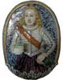
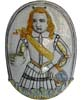
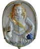
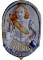
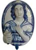

| Les bras de lumière de Nevers
Olivier Estienne
Ces appliques présentent un caractère bien typé
: hautes d'une quarantaine de centimètres, larges de vingt
six à trente, de forme généralement ovale.
Elles représentent, en bas-relief un jeune homme vu à
mi cuisse ou en buste, en habit de page, chapeau à plume
et baudrier; le bras, tendu vers 1 avant, tient un binet en forme
de gobelet destiné à recevoir une bougie.

Ces objets sont obtenus par estampage sur un moule, le bras étant
ajouté sur la plaque avant cuisson. Un même moule a
parfois servi à l'estampage de plusieurs plaques, peintes
ensuite différemment, autres couleurs, autres détails
comme les chevelures, les rubans, le chapeau.
La fabrication s'étend sur tout le 17ème siècle,
la date la plus ancienne est celle de 1601 relevé au revers
d’un bras de lumière vendu à Joigny le 20 mars
1988 n° 18. Un autre vendu à l'hôtel Drouot le
26 mars 1973 porte la date « Nicolas 1671 ».
II faut noter que les bras de lumière ont été
fabriques pour constituer des ensembles décoratifs; le personnage
regarde à gauche, regarde à droite, lève les
yeux au ciel ou les baisse timidement. Il est impossible aujourd'hui
de reconstituer ces ensembles. II existe aussi des bras de lumière
féminins, beaucoup plus rares.

Le type a été repris à la fin du 19ème
siècle. C'est ainsi qu'on a pu voir à l'exposition
de la Maison de la culture de Nevers de 1987 une plaque «
Jeanne d'Arc », une plaque « Dunoys » en costume
moyenâgeux de fantaisie.
Les bras de lumière en faïence de Nevers sont rares.
On en recense 28, dont 16 dans les collections publiques et 12 passés
en vente dans le 50 dernières années. Compte tenu
de la rotation normale de ce stock, on peut estimer le disponible
en mains privées à une trentaine de pièces.
Merci beaucoup à Olivier Estienne, auteur
de ceramicscollector.com
pour cette text. © L'auteur.
Encore d'articles
|